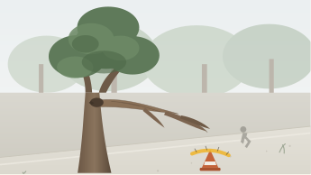

COMMUNITY INTAKE
Report an Issue
Public civic reporting for Indonesian municipal services.
01
Topic

02
Location
Independent Verification
Cancel and return to feed
Our verification desk checks each report and routes it to the municipal agency (Bina Marga, PAM JAYA, Dishub, DLH, Satpol PP, Citata). Resolution timestamps are tracked publicly.
STEP 03 OF 04
Attach evidence
Reports with photographic proof or audio notes are prioritized by field dispatchers.
Upload evidence files or use camera simulation
Images, audio voice notes, inspection video clips (JPG, MP4, M4A)
 Capture Photo
Capture Photo
 Record Audio Memo
Record Audio Memo
ATTACHED EVIDENCE (2)
Click any card to inspect

incident_capture_camera.jpg IMAGE · 2.4 MB
Photographed live on-site by resident camera.
IMAGE · 2.4 MB
Photographed live on-site by resident camera.

quick_site_clip.mp4
VIDEO · 4.8 MB
12-second horizontal pan of incident.